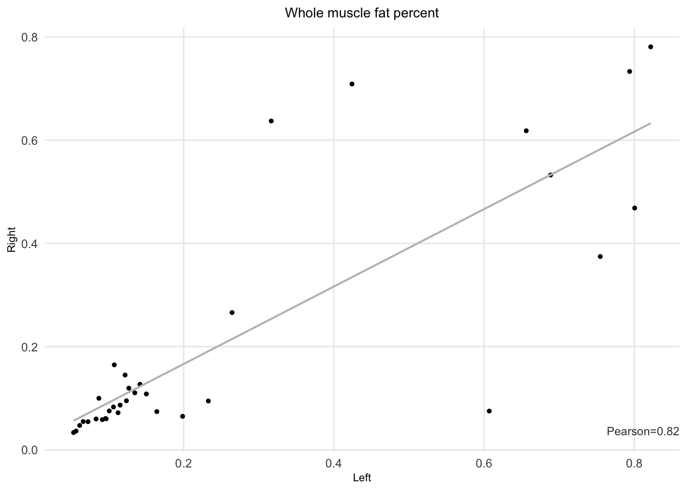
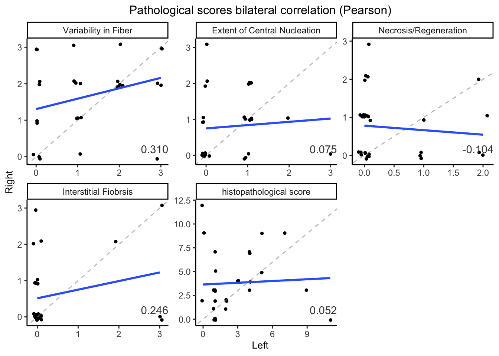
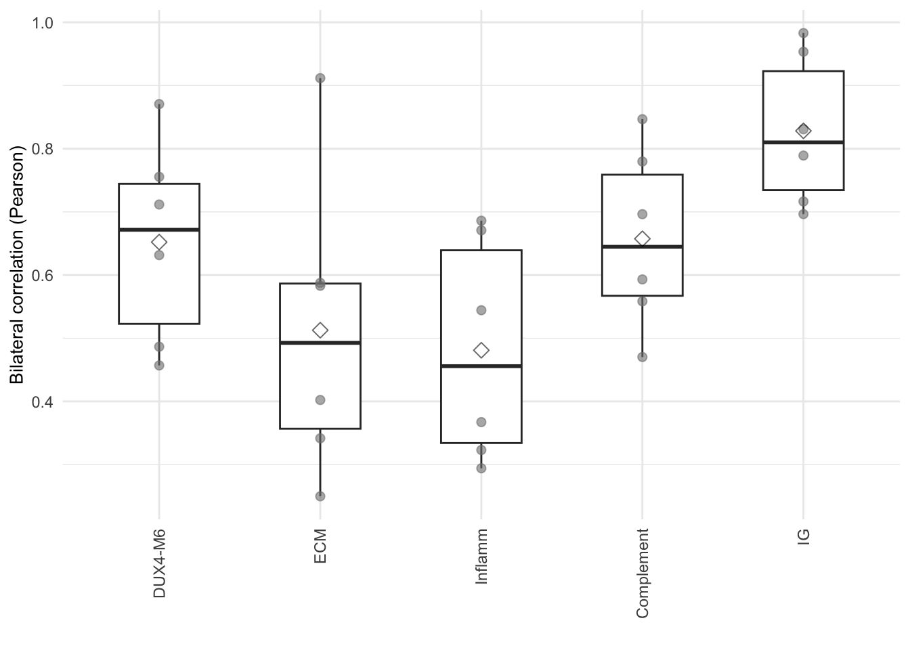
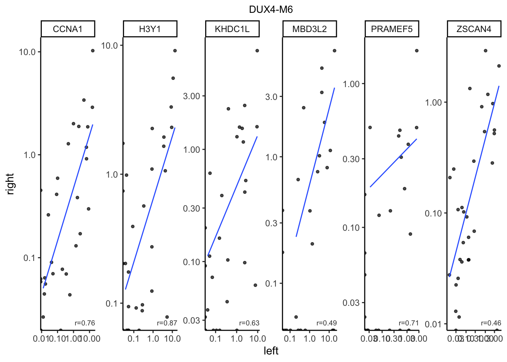
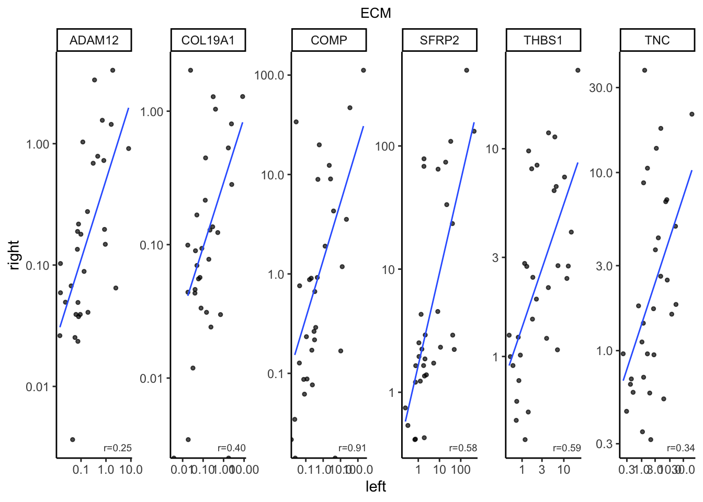
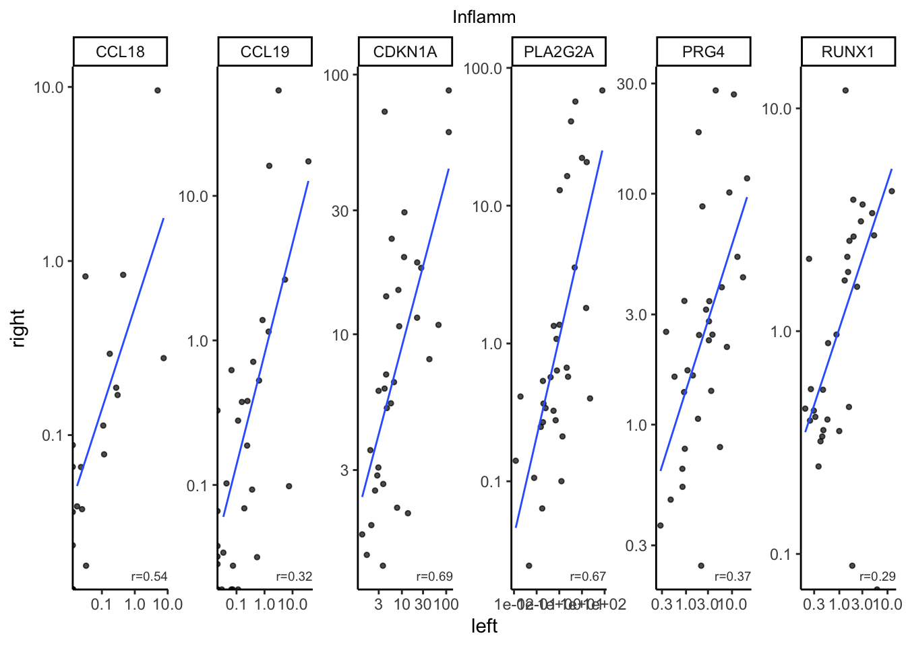
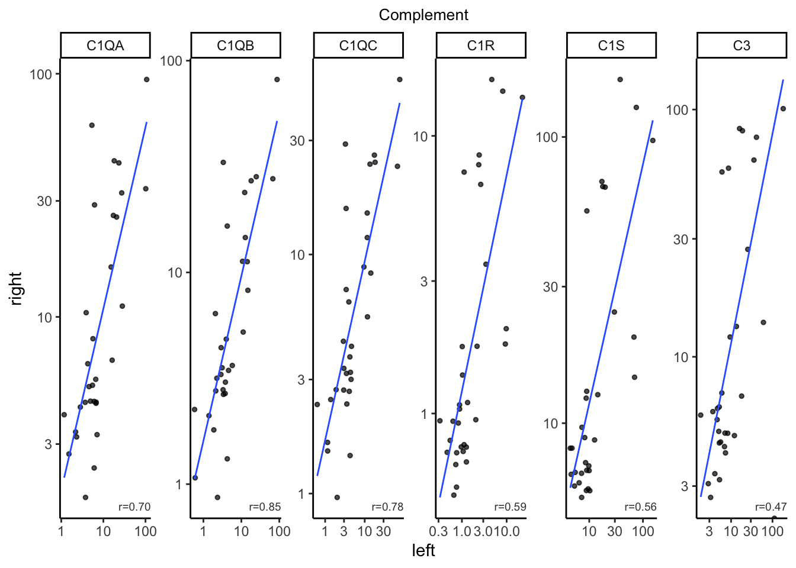
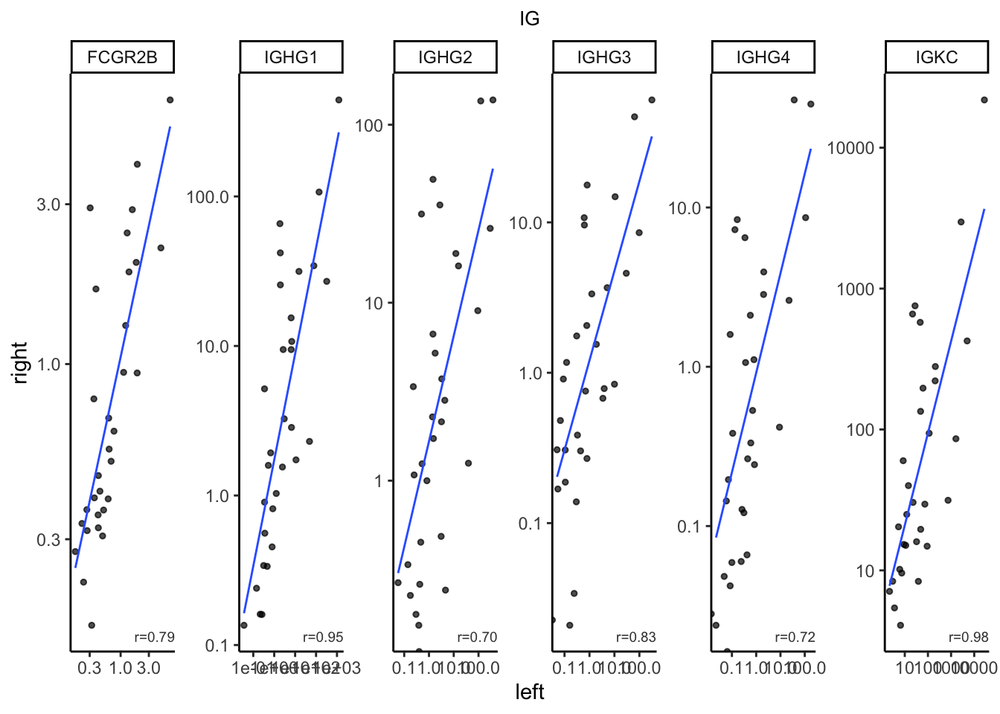
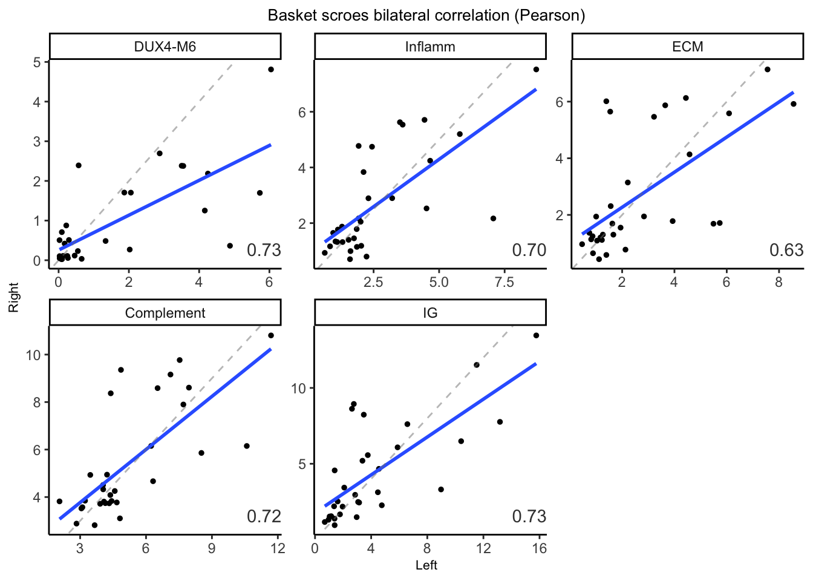

8 Bilateral comparison
8.2 Fat infiltration
The Pearson correlation between right and left fat infiltration is 0.82.
#> # A tibble: 1 × 1
#> cor
#> <dbl>
#> 1 0.821
8.4 Comprehensive for other histopathological variables

## Baskets biolateral comparisons
8.4.1 Per-gene correlation
We calculated the left-t-right correlation for every genes in the baskets. The unit of the expression here is TPM. 1.
| basket | cor_mean |
|---|---|
| DUX4-M6 | 0.6521460 |
| ECM | 0.5126943 |
| Inflamm | 0.4809635 |
| Complement | 0.6574381 |
| IG | 0.8281996 |

Scatter plot for each genes 6 by 5 scatter plots 
 ### Per-basket by log sum Here we calculate the per-basket bilateral correlation using basket scores.
